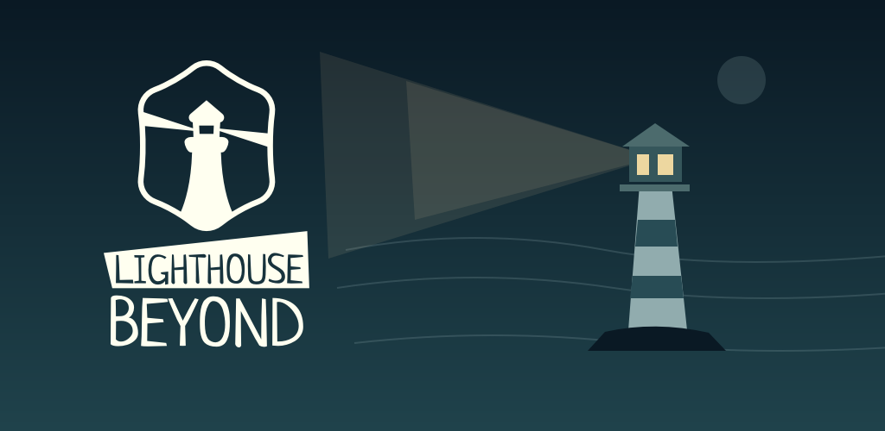
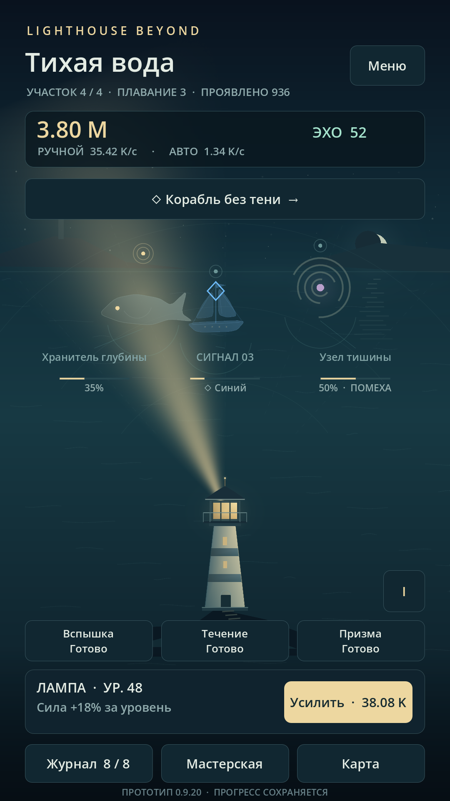
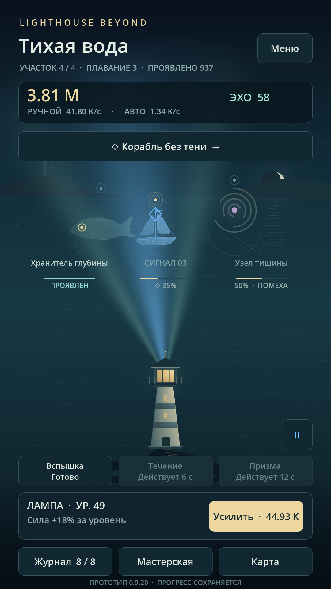
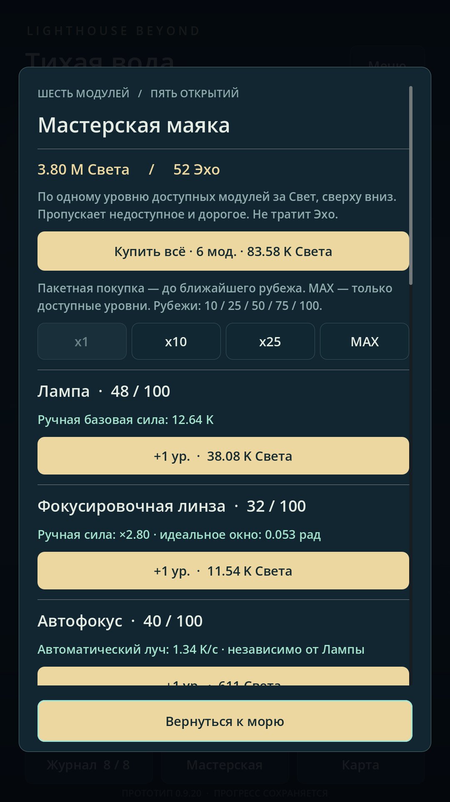
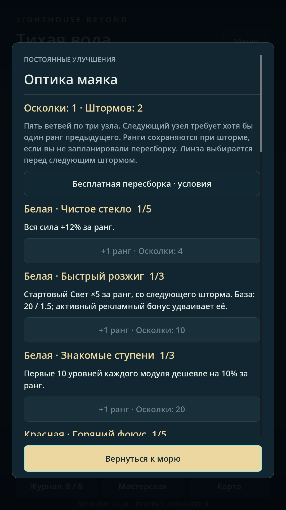
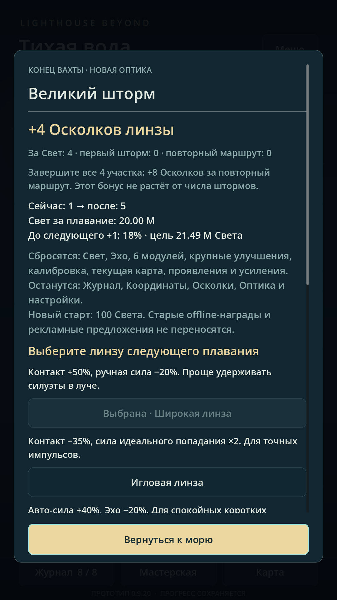
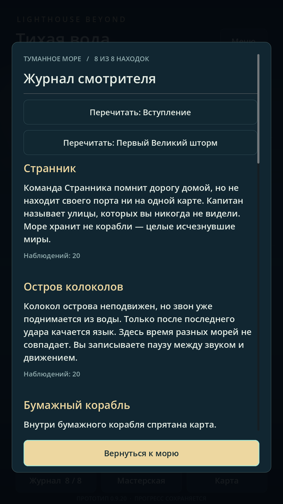
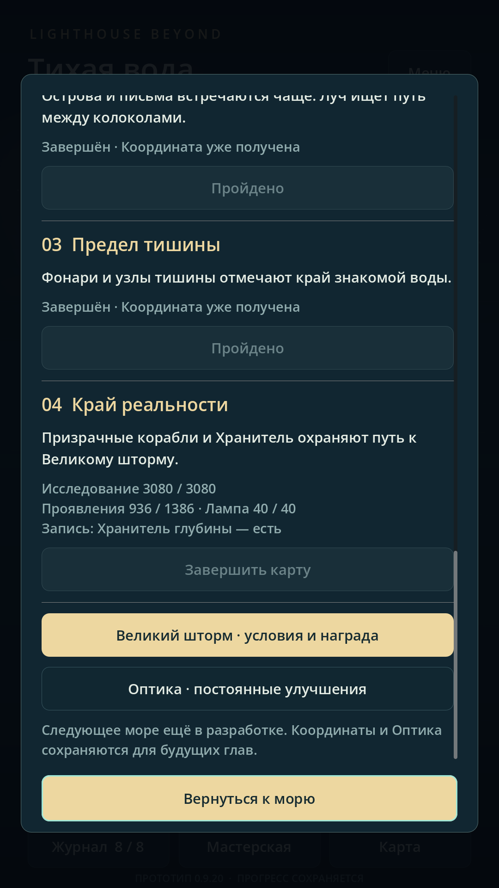
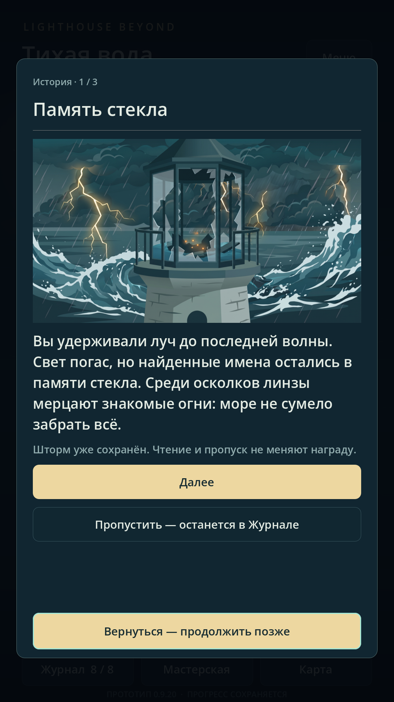

Ранний доступ
Скоро отправимся в ранний доступ
Lighthouse Beyond Idle готовится к раннему доступу на Android. Скоро у моря появятся первые смотрители — и мы хотим показать, какое путешествие их ждёт.

Вы направляете луч маяка, проявляете силуэты в тумане и собираете Свет для улучшений. Мастерская помогает развивать ручной луч и автоматику, а синий спектр открывает отражения, которых не видно в обычном свете.
Постепенно море складывается в историю: необычные встречи оставляют записи в Журнале, карта ведёт к новым участкам, а Великий шторм начинает следующее плавание. Сохранённые осколки позволяют развивать Оптику и возвращаться к маяку с новыми возможностями.
Полминуты у маяка
В этом ролике — живой игровой процесс: проявление объектов, смена спектра, улучшение лампы, Оптика и подготовка к шторму. Это та же запись, которую мы подготовили для карточек магазинов.
Русский интерфейс · 30 секунд игрового процесса
Видео не удалось загрузить. Открыть видео ↗
Посмотрите на игру ближе
Скриншоты из набора для Google Play и RuStore. Нажмите на изображение, чтобы открыть его целиком.








Встретимся на берегу
В раннем доступе будем дорабатывать игру вместе с вами: слушать впечатления о темпе путешествия, удобстве управления и историях моря. Точную дату и ссылки на Google Play и RuStore объявим здесь, когда откроется доступ.